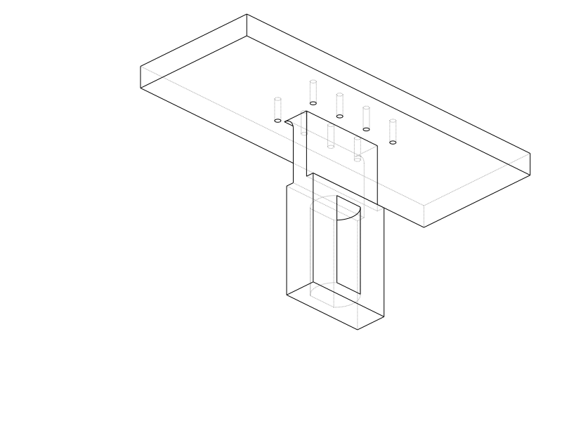
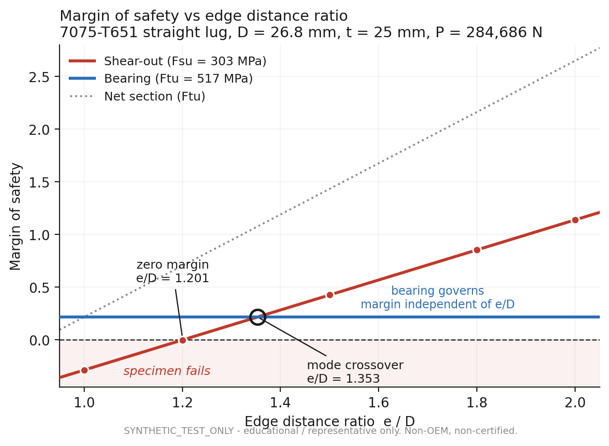
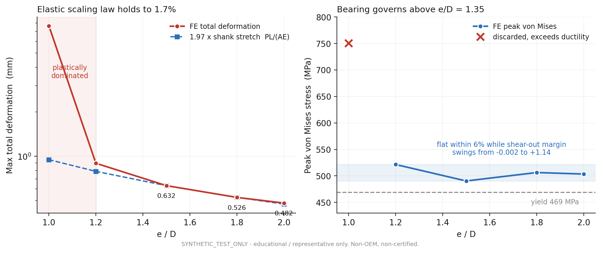
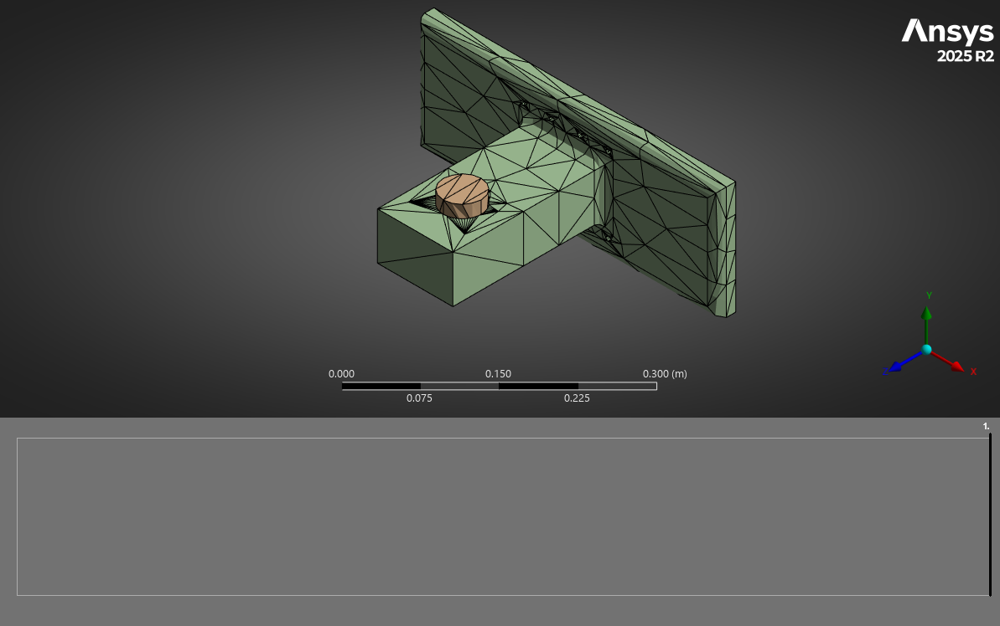

Projects / AeroFrame-DT
AeroFrame-DT
STRUCTURAL SUBSTANTIATION / PARAMETRIC CAD / NONLINEAR FEA / ALLOWABLES / FATIGUE / DAMAGE TOLERANCE
One synthetic pylon-to-wingbox attachment fitting carried from controlled geometry and load definition through hand analysis, nonlinear finite-element verification, material allowables, fatigue, damage tolerance, manufacturing sensitivity, and a five-variant geometry trade.


01Engineering question
A pylon attachment fitting has several plausible failure paths: bearing at the pin, net-section tension, shear-out through the free edge, local plasticity at the bore, fastener/interface load transfer, and global compliance through the web and flange. The project was built around a narrower question: which model controls the decision, and can every change to that conclusion be traced back to geometry, material basis, loads, or verification evidence?
▶Sweep the edge-distance trade
The released configuration is loaded by default. Move e/D and watch the governing failure mode change hands near 1.35; the tolerance switch applies the worst modeled manufacturing stack.
This model needs JavaScript. Everything it demonstrates is described in the sections below.
02Analysis chain
03Released result
The released configuration uses 7050-T7451 with MMPDS A-basis allowables. Combined bearing and transverse behavior at the lug bore governs the nominal release.
The worst modeled manufacturing tolerance stack consumes 15.3% of the nominal margin. Safe-life and damage-tolerance calculations are retained as engineering evidence, not certification claims.
04Pylon attachment geometry trade
A five-variant edge-distance-to-diameter sweep isolated the geometry variable controlling the local failure-mode transition. The study showed the crossover near e/D ≈ 1.35 and preserved the regions where simple failure equations and nonlinear response no longer agreed cleanly.

Failure-mode crossover
Shear-out, bearing and net-section margins are plotted together to make the governing transition visible instead of relying on one contour maximum.

FE response across variants
Elastic response scaling stays within 1.7% outside the plastically dominated point while peak stress behavior changes after bearing governs.
05Evidence kept attached to the claim

Mesh + interface model
Load transfer is introduced through the modeled pin/bore interface with local refinement around the bore and web transition.

Open consistency item
The plastic-strain check is intentionally shown because agreement degrades as the plastic zone shrinks. It remains a documented model-consistency issue rather than being hidden.
06Correction trail
The structural conclusion changed as the method got better. The initial margin was reduced after removing an invalid uniform-bearing assumption, then reduced again when optimistic allowables were replaced. A later stock-envelope check showed the selected 7075 plate basis was not appropriate for the required thickness, forcing the release material to 7050-T7451.
| Stage | Margin | Change |
|---|---|---|
| Initial hand analysis | +0.710 | Initial assumptions |
| Thick-lug correction | +0.165 | Uniform-bearing assumption removed |
| Real A-basis allowables | +0.078 | Material basis corrected |
| Elastic-plastic contact, 7075 | +0.156 | Local redistribution measured |
| 7050-T7451 release | +0.151 | Manufacturable material basis restored |
07Verification record
- 18 formal requirements closed with a traceable verification matrix.
- Refined FE equilibrium closes to 0.006%.
- Independent hand-method reconstruction agrees to approximately 0.06%.
- Continuum cantilever and plate-bending benchmarks agree within 0.20% and 0.62%.
- Exact and linearized tolerance sensitivity agree to approximately 0.1%.
- Two damage-tolerance implementations agree within 7% on critical crack.
- NASTRAN cross-solver decks were prepared, but cross-solver execution remains an open item and is not presented as completed validation.
08Claim boundary
AeroFrame-DT is educational, synthetic, non-OEM and non-certified. It demonstrates a reviewable structural-engineering method and evidence discipline. It does not establish airworthiness, approval for flight hardware, or certification-level substantiation of an actual aircraft installation.